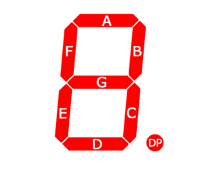
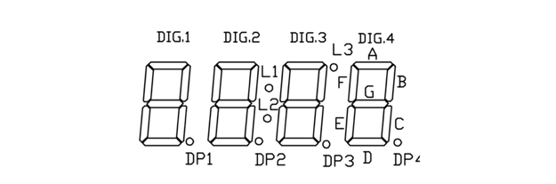
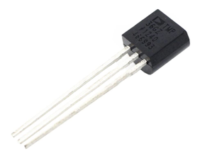
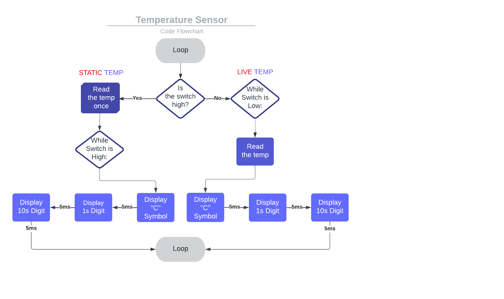
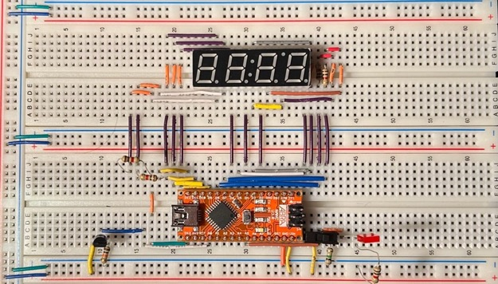
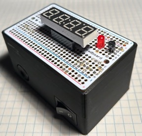

2023 · Embedded Sensor System
TMP36 Arduino Thermometer
Designed a digital thermometer that reads a TMP36 analog temperature sensor, converts the value in Arduino code, and displays the result on a multiplexed 4-digit seven-segment display.

Video Demonstration
Working demonstration
The project video shows the physical build, behaviour, and final result.
 ▶ Watch on YouTube
▶ Watch on YouTube
Project Overview
Turn an analog sensor reading into a polished temperature display.
The main challenge was writing efficient display code: each digit had to be refreshed rapidly enough to appear continuous while still updating live temperature readings.
What I built
- TMP36 analog temperature input
- Arduino conversion from ADC reading to Celsius
- 4-digit seven-segment multiplexing
- Static/live temperature mode switch
- Perma-proto and custom enclosure
Technical Skills
Skills demonstrated
Sensor conversion
Applied directly in the design, build, debugging, or final integration of the project.
Embedded display control
Applied directly in the design, build, debugging, or final integration of the project.
2D arrays
Applied directly in the design, build, debugging, or final integration of the project.
Multiplexing
Applied directly in the design, build, debugging, or final integration of the project.
CAD case design
Applied directly in the design, build, debugging, or final integration of the project.
Build Story
Display logic, sensor hardware, and final enclosure
Display/control logic
The image to the right shows the 4-digit seven-segment display pinout, where shared segment lines and digit enable pins allow multiplexed display control.

Final case blueprint
The image to the right shows the TMP36 temperature sensor, the analog sensor used to generate the voltage reading that is converted into Celsius.

Internal packaging
The image to the right shows the thermometer code flowchart, including live/static reading modes, temperature conversion, and repeated display refresh for persistence of vision.

Finished exterior
The image to the right shows the TMP36 thermometer breadboard prototype, verifying the sensor, Arduino Nano, and multiplexed display before packaging.

Board layout inside case
The image to the right shows the final enclosed thermometer, turning the breadboard circuit into a compact device with display, switch, LED, and power input.
